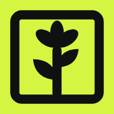
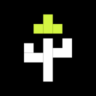
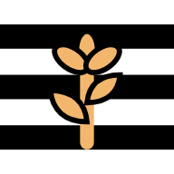

Probar los 10 íconos brutales
Elige uno y agrégalo a tu pantalla de inicio para ver cómo se ve de verdad junto a tus otras apps. Es solo una prueba: tu Tavia de siempre no cambia.
- 1 · Brote negro
- 2 · Brote blanco

3 · Bloque lima- 4 · Sello
- 5 · Corte
- 6 · Hoja gigante

7 · Pixel
8 · Rayas- 9 · Check que brota
- 10 · Flor
Página de prueba de diseño (Tavia Pro, en desarrollo).